A little over a year ago, we began testing how well Claude could design basic electronic circuits. We collaborated with Diode Computers,1 a company that designs and manufactures circuit boards, to train Claude on simple tasks—for example, on reading a chip’s datasheet and working out which parts a chip needs in order to run. The models we experimented with back then couldn’t reliably lay out a circuit board; they also struggled to design components that fit together. Now, Claude can both design and prototype electronic hardware from start to finish.
Engineering an electronic device requires working through many complex steps and practical constraints. You have to not only design and simulate a circuit board, but also reason about the board’s physical layout and how it will behave, model the mechanical components, and write firmware—all while keeping track of which parts are readily available and what a factory is set up to build.
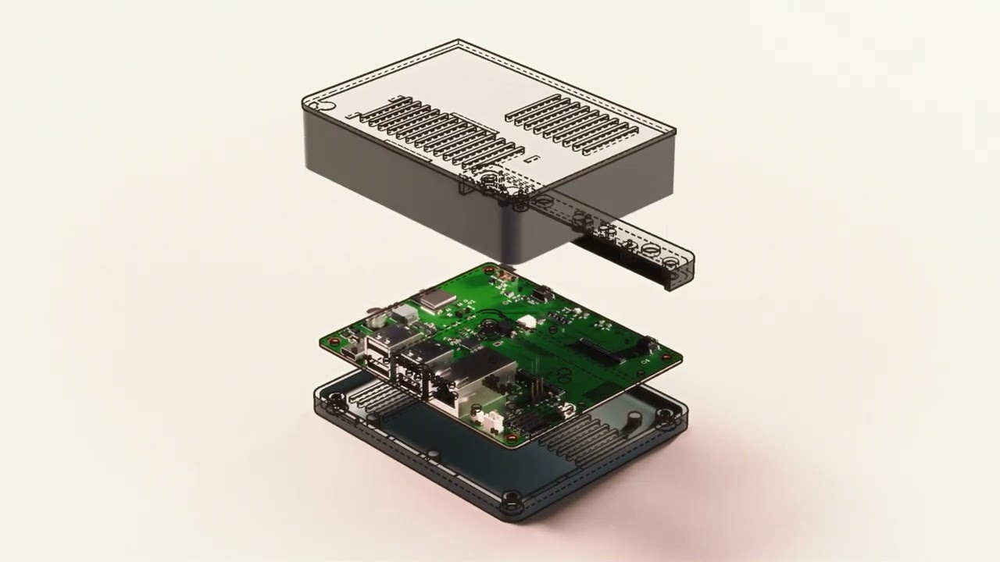
To see how newer Claude models have improved in this area, we collaborated with Diode again, this time asking Claude Fable 5.2 to design three electronic devices: a speakerphone, a voice-assistant hub, and a handheld virtual pet. With minimal prompting, Claude was able to use geometric reasoning to lay out each circuit board, anticipate manufacturing constraints, and make sure its designs would work within them. It revised its own work, modeled its designs in computer-aided design (CAD) software, and, finally, directed human engineers to build prototypes that worked without any fixes to their circuitry.
For each design, we began by giving Claude a simple prompt that outlined what kind of device to build and its main hardware requirements. The prompt for the speakerphone, for example, asked for “a puck that plugs into a computer over USB-C and includes microphones and a speaker, supporting Bluetooth with a PCB antenna.” Claude proceeded to write the device’s specifications, draw clean visual schematics, choose where to place the components on a printed circuit board (PCB), route the copper connections between them, design a 3D-printable enclosure, code the firmware, and prepare a parts list. Diode assembled the circuit boards and ran the firmware, under Claude’s direction. The final result was a prototype of a speakerphone that still works after weeks of use.
Claude went through a similar process to build the voice-assistant hub and the virtual pet, and both are also still in good working order. Because the devices are early prototypes, we don’t yet know how they’ll hold up with continued use or whether they would pass commercial certifications.
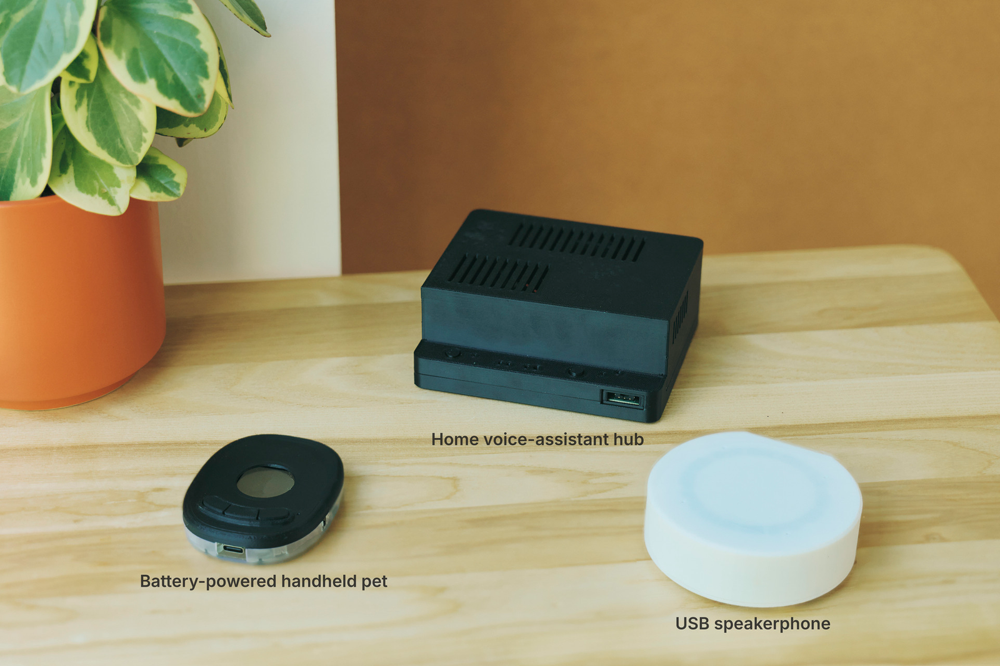
Reasoning through geometric problems
The most substantial difference between Fable 5.2 and the models we used in our earlier tests was in how well Fable 5.2 reasoned through complex geometric problems, such as where to place components on a circuit board and how to route the copper connections between them.
Earlier models had struggled to decide how to arrange basic components—placing supporting parts too far from the chips they served, for example, or orienting connectors incorrectly. Fable 5.2, by contrast, produced more compact, practical layouts. It routed the most important connections first: those that carry high-speed signals or high currents, or that are sensitive to noise. For example, for the voice-assistant hub, Claude started by routing the USB and Ethernet connections, which transmit signals along pairs of tracks—thin strips of copper on the board. It routed one pair of tracks at a time, keeping the two tracks in each pair the same length and correctly spaced. It also added tuning patterns—small zigzags that lengthen a track so that signals arrive at the same time—and arranged the parts of the power supply to make it more efficient.
To demonstrate how much better Fable 5.2 is than earlier models at laying out circuit boards, we asked Diode to run PCB Gym—an internal benchmark that scores models based on how well they can place components and reroute connections on board designs whose layouts have been removed. Fable 5.2 scored 69% on the benchmark, compared with 25% for Fable 5 (Figure 2). It also performed better on BenchCAD 2.1, a public benchmark that tests whether models can rebuild 3D parts, assemblies, and circuit boards from engineering drawings and rendered images. Fable 5.2 scored 83.5%, nearly double the score of its predecessor, Claude Fable 5.1.
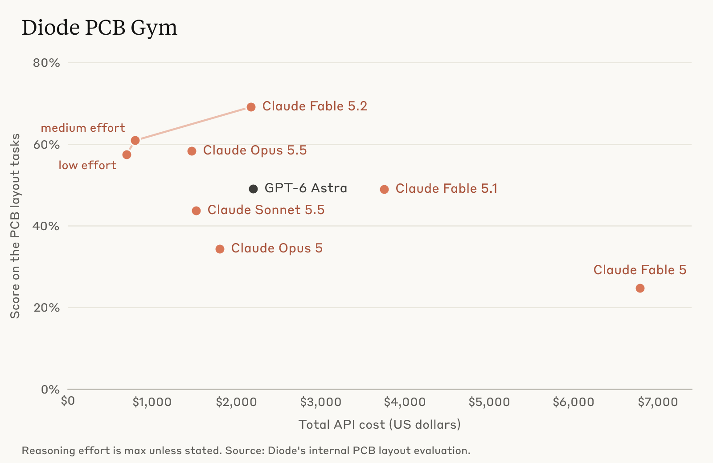
Revising designs
Earlier models rarely revised their own work when designing PCB layouts, even when it became clear that their placement choices would never let them finish routing the connections. Over the past year, Diode designed many boards with these models that were 95% complete but still unusable.
When Claude noticed one of its designs wasn’t working, it would change course without being prompted to do so. For instance, when designing the speakerphone’s circuit board, which has four layers of copper, it reassigned signals to different pins on two of the chips. This allowed the tracks under the speakerphone’s touch-sensitive controls to stay on a single layer without crossing one another. Later, when the back of the board became too crowded, Claude swapped the signals on interchangeable pins and laid out a whole corner of the board again, rather than patching the problem with extra jumps between layers.
And when placing tracks in its design file for the voice-assistant hub, Claude noticed that the copper connections were “getting too tangled to trace visually” and reasoned, “I should just rip these traces [tracks] and start fresh.” It proceeded to delete and reroute copper connections dozens of times until it found an arrangement that worked.
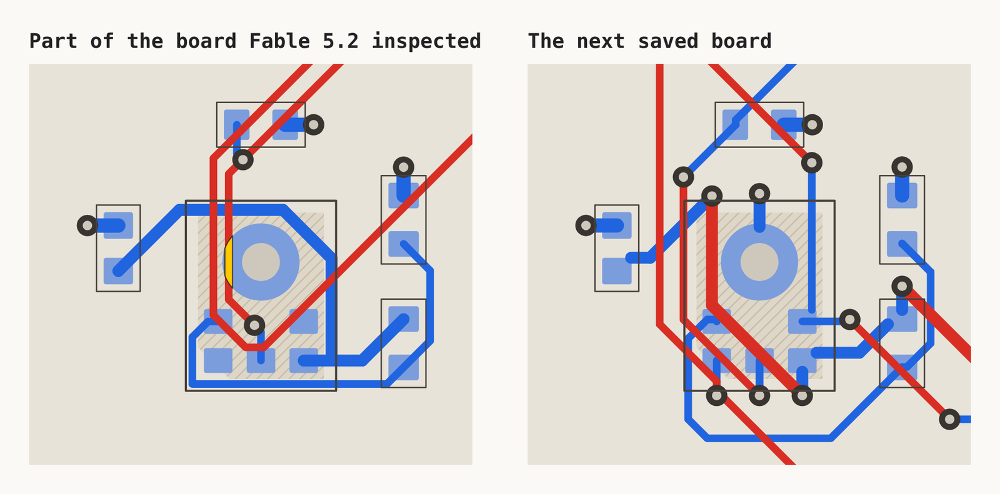
Using software and documentation
When a design decision for one of the devices depended on the details of a particular part, Claude often checked that part’s datasheet—a technical document published by the manufacturer. When asked whether the handheld pet would work without a battery, Claude read the charger’s datasheet and answered that it would run on USB power but predicted that the charging light would flicker, because the charger keeps recharging a small capacitor in the battery’s place.2
To route the connections on the voice-assistant hub, Claude started with the design software Diode provided, which let it run the router (a tool for drawing tracks) built into KiCad, a widely used circuit board design program. KiCad’s router drew one track at a time between two points Claude chose. But the hub had long tracks running from a 100-pin connector, and Claude judged that routing these one by one would take too much step-by-step guidance.
Instead, Claude wrote its own router: an algorithm that divides the board into a grid and searches it to find a clear path for each track. Within about half an hour, Claude had a router that could lay each long track in roughly a second. When Claude spotted an audio clock track running too close to the Ethernet tracks, it adjusted the router to leave more room around sensitive tracks.
Keeping track of constraints and downstream effects
Decisions made in one part of a design have downstream effects, which Claude kept track of. While designing each device’s enclosure, it wrote code to check that a 3D model of the circuit board would fit inside the enclosure without any components colliding. For example, it found that the speakerphone’s board couldn’t be lowered straight into the enclosure, because the mute switch would hit the back wall. Claude worked out that the board would fit if it was tilted by about 25 degrees during installation. It tested this in its 3D model and added the step to the assembly instructions.
When designing the enclosure for the voice-assistant hub, Claude calculated that a 25 mm-long microphone port—the opening that lets sound reach the microphone—would resonate near 3.4 kHz. That is “right in the voice band,” it reasoned, “which is not ideal though still usable for voice assistant purposes. A better approach is a wedge-shaped enclosure that’s tall at the rear and steps down low at the front.” The wedge shape shortened the ports to about 10 mm, which raised the resonant frequency to about 8.9 kHz, at the very edge of the range used for speech. Claude also wrote firmware for the speakerphone that dims its ring of LED lights as the audio becomes louder, to keep the device under the electrical current limit Claude had designed into the board.
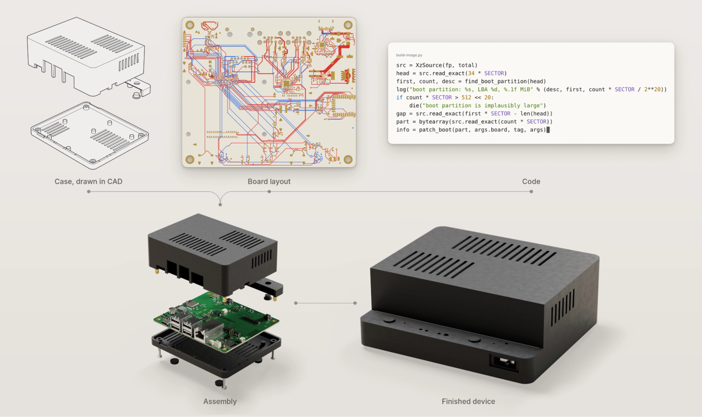
Designing for real-world manufacturing
In electronics design, engineers have to work within the constraints of the real world. That is, they have to make sure a factory can actually make the thing they want to build. They do this by running two kinds of checks: design-for-manufacturing (DFM) checks, which compare a circuit board’s geometry with the factory’s manufacturing limits, and sourcing checks, which confirm that their distributors have the parts in stock.
Claude ran these checks itself and sorted the results into problems that needed fixing and flags it could ignore. Its checks for the voice-assistant hub flagged six slivers of solder mask (the protective coating on a circuit board) as too thin to manufacture. Claude fixed them by widening the openings in the solder mask, without moving any parts. The checks also flagged a connection between two grounds (shared return paths for electrical current) as an error, because the automated checker hadn’t recognized that the connection was deliberate. Claude correctly reasoned that it wouldn’t affect performance and ignored the flag.
Diode manufactured all three boards directly from Claude’s design files, without any back-and-forth over adjustments. Factories and engineers often have to work through multiple rounds of manufacturing changes, and the Diode team told us they were surprised that they didn’t have to do this with Claude.
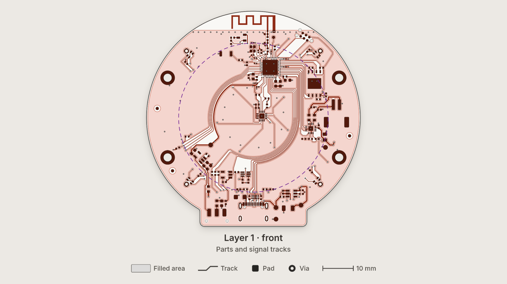
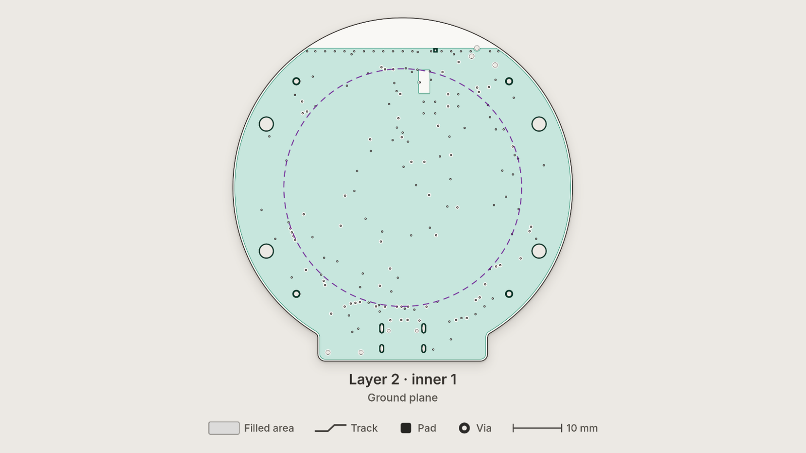
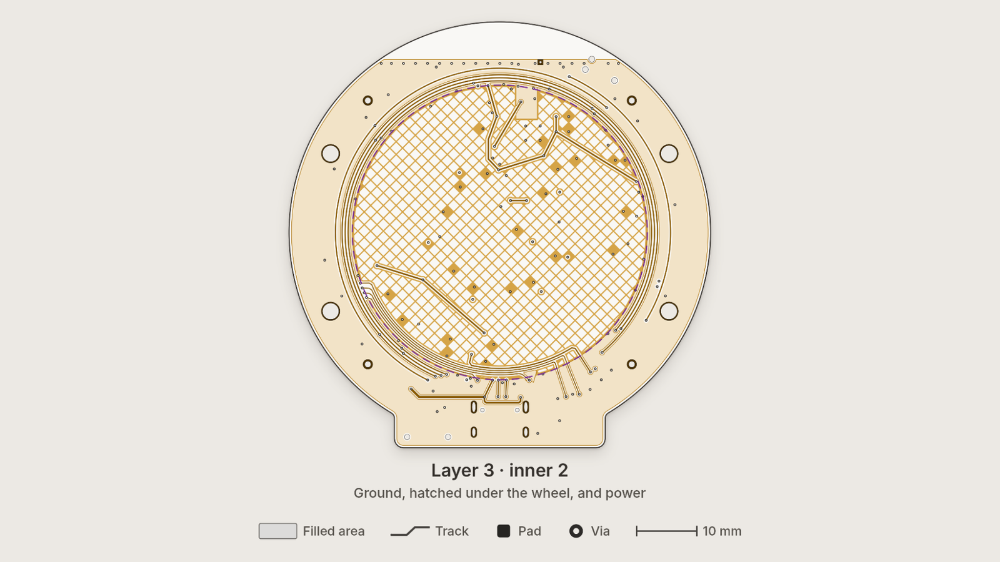
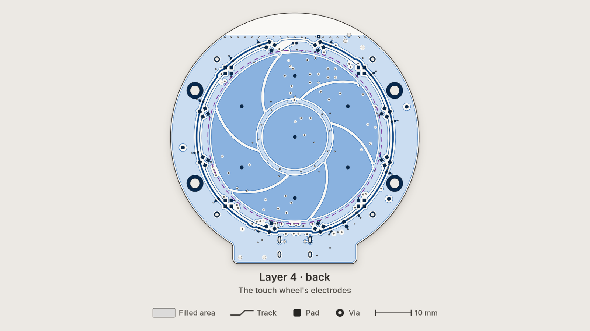
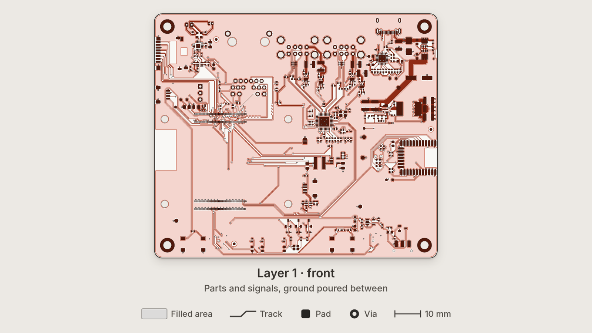
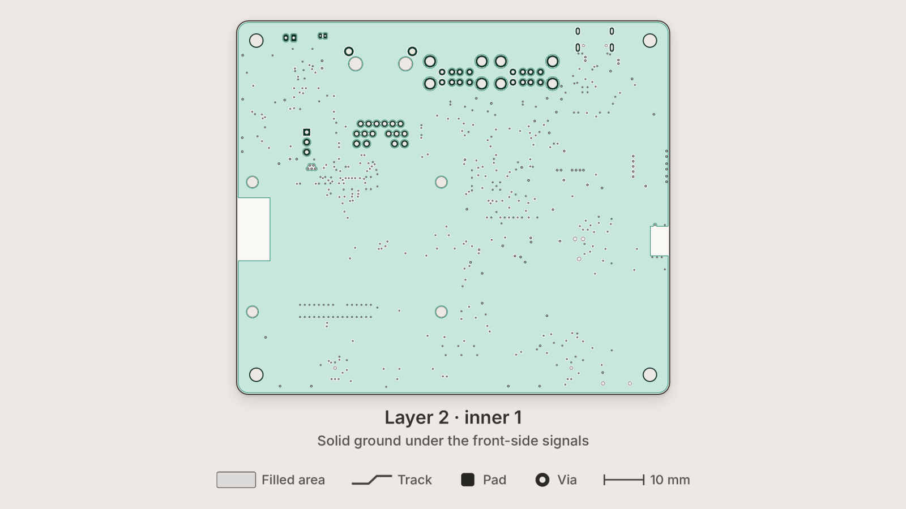
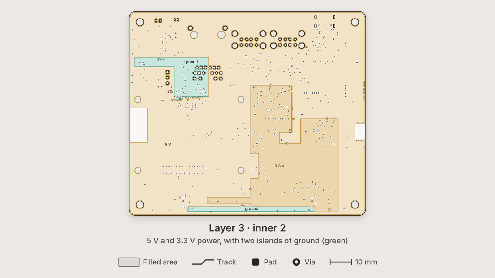
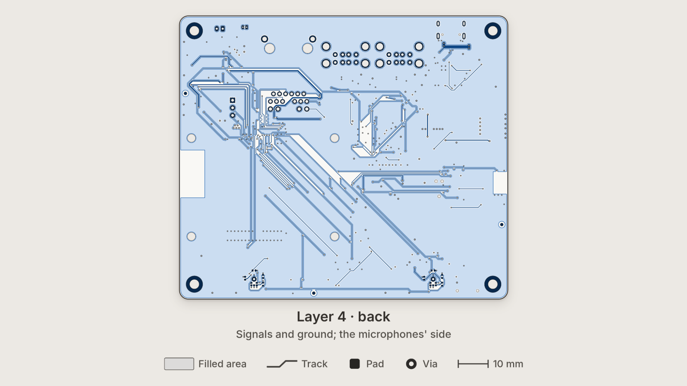
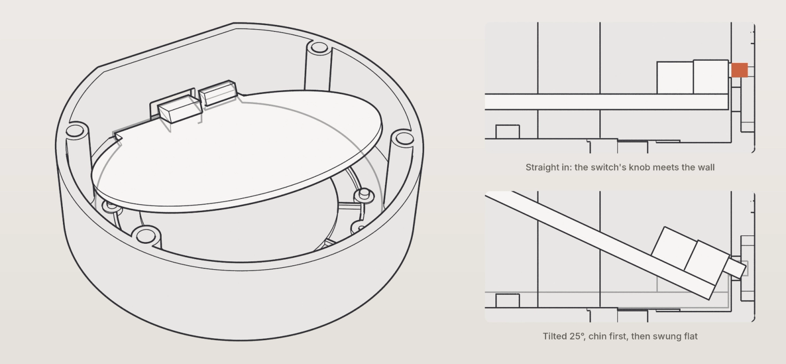
Limitations and next steps
All three of these devices are still prototypes: they haven’t been through electrical validation, antenna tuning, thermal testing, or certification, and they weren’t designed for mass production. Since Claude wasn’t connected to test equipment or to the machines that make and assemble circuit boards, engineers at Diode had to physically build and test the prototypes. Even so, over the past year, Claude has improved substantially at reasoning through decisions about component placement and routing, and it can now design electronics with minimal human guidance and help people build the prototypes. Other models are making progress here, too: OpenAI recently wrote about using its models to design a handheld device. Work like this could help engineers build and test new hardware designs faster.
Next, we plan to investigate whether Claude can design denser, faster, and more complex boards, check them in simulation, and learn from measurements taken on the finished devices.